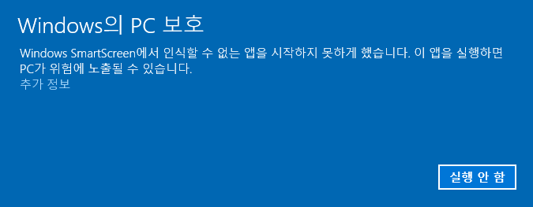
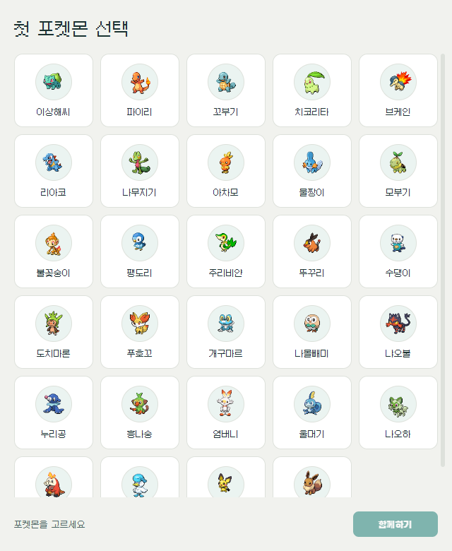
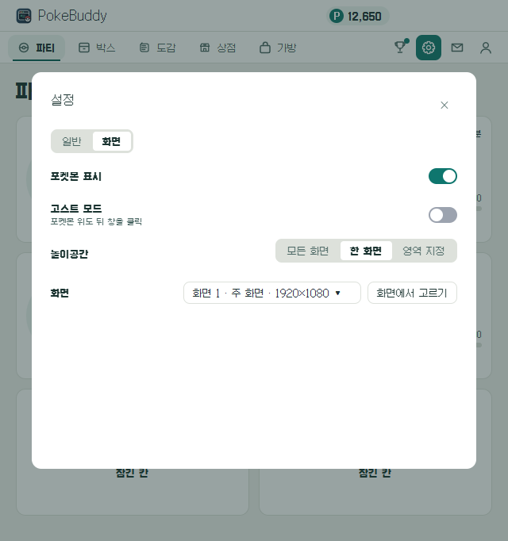
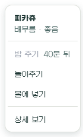
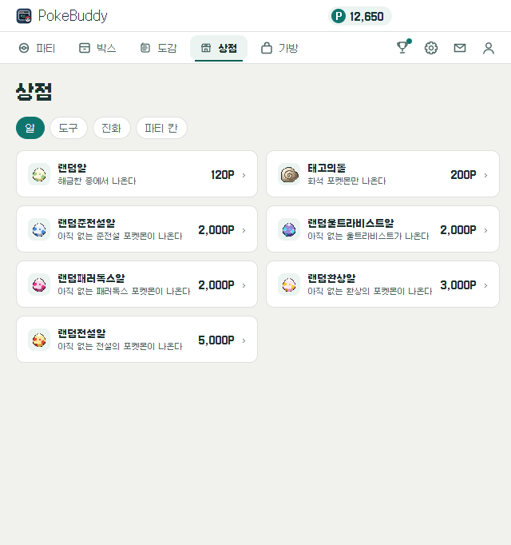
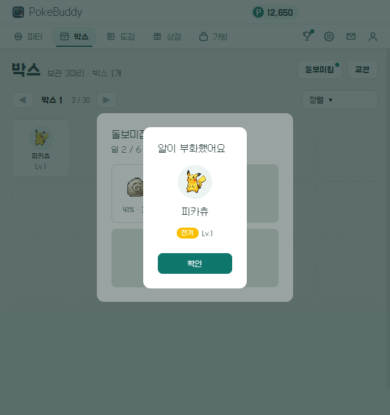
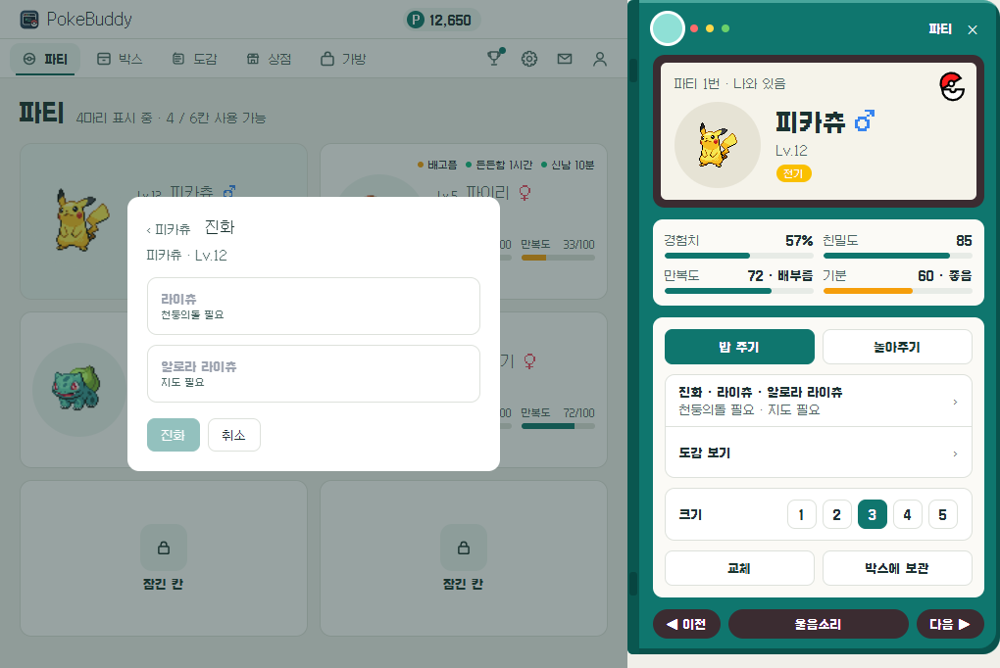
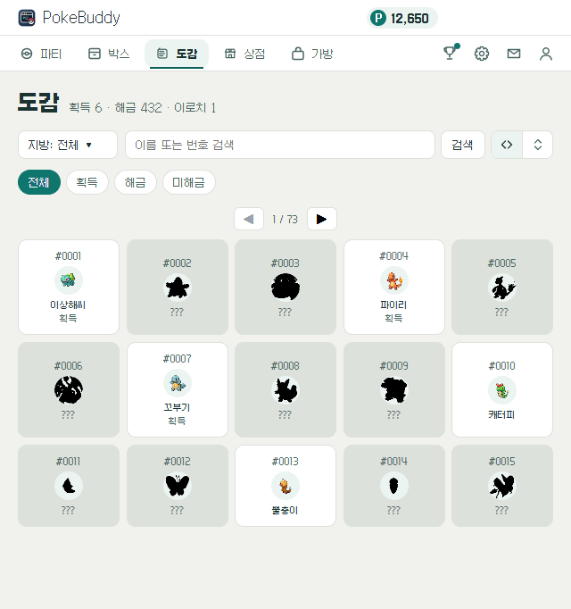
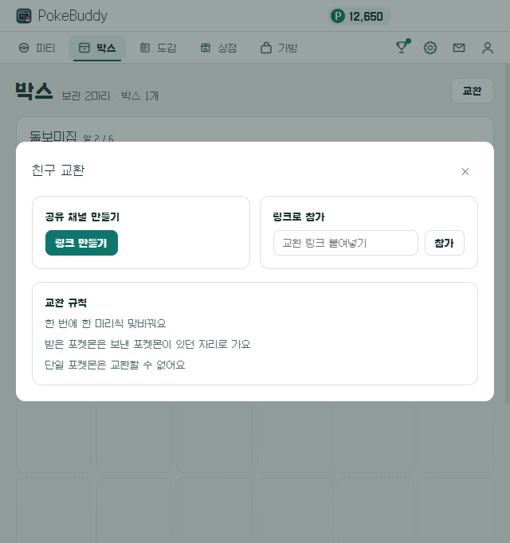
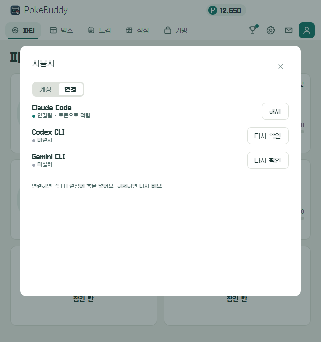

pokebuddy 설명서
이 문서는 설치 파일로 pokebuddy 를 쓰는 사람을 위한 설명서다. 설치, 게임 방법, 팁, 설정, 문제 해결을 적는다. 같은 내용을 웹 가이드로도 본다.
- 저장소에서 실행하는 방법, CLI 명령, 빌드와 릴리스는 개발과 배포에 있다.
- 포켓몬의 움직임과 CLI 상태 연동의 원리는 동반자 동작에 있다.
- 게임 규칙은 게임 규칙을, 가격과 확률은 밸런스 수치를 따른다.
- 화면 명칭은 용어사전을 따른다.
설치
최신 릴리스에서 설치 파일을 받는다. Node.js 는 필요 없다. 모든 설치본은 같은 저장 폴더를 쓴다. 앱을 지웠다 다시 깔아도 파티와 포인트가 남는다.
Windows
pokebuddy-Setup-<버전>.exe 를 실행한다.
- 코드 서명이 없다. 처음 실행하면 "Windows의 PC 보호" 창이 뜬다.
추가 정보를 누른 뒤실행을 누른다. - 묻지 않고 바로 설치한다. 설치 위치는
%LOCALAPPDATA%\Programs\pokebuddy다. 관리자 권한이 필요 없다. - 설치가 끝나면 앱이 뜬다. 처음이면 첫 포켓몬 선택 창이 뜬다.
- 시작 메뉴와 바탕화면에 바로가기를 만든다.
- 앱이 떠 있을 때 바로가기를 다시 누르면 설정창을 연다.
- 작업 표시줄 아이콘을 우클릭하면 파티 포켓몬마다 밥 주기와 놀아주기가 보인다.

Mac
Apple Silicon 은 PokeBuddy-<버전>-arm64.dmg, Intel 은 PokeBuddy-<버전>-x64.dmg 를 연다.
PokeBuddy를Applications로 끌어 넣는다.- Apple 공증이 없다. 처음 열면 "Apple 이 확인할 수 없음" 경고가 뜬다. 시스템 설정 → 개인정보 보호 및 보안 → 아래의
그래도 열기를 누른다. - 경고 대신 "손상되었기 때문에 열 수 없습니다"가 뜨면 터미널에서
xattr -dr com.apple.quarantine /Applications/PokeBuddy.app을 실행한 뒤 다시 연다. - 계정·교환 로그인 정보는 키체인 키
PokeBuddy Safe Storage로 암호화한다. 0.9.0 이하에서 올라오면 이 키의 허용 창이 한 번 뜬다. 로그인 암호를 넣고항상 허용을 누른다. 그 뒤 업데이트에서는 다시 묻지 않는다. - 앱은 Dock 에 남지 않는다. 메뉴 막대 아이콘으로 있다.
- 앱이 떠 있을 때 앱을 다시 열면 설정창을 연다.
업데이트
- 앱이 켜진 채로 새 버전을 받는다. 켠 뒤 5초, 그 뒤 6시간마다 확인한다. 설정 창을 열 때도 확인한다. 받는 동안에도 게임은 그대로 한다.
- 다 받으면
새 버전이 준비됐어요창이 한 번 뜬다.지금 다시 시작을 누르면 바로 바뀐다.나중에를 누르면 앱을 끌 때 바뀐다. 설정 모달 아래에도 "새 버전 준비됨"과다시 시작이 뜬다. - 서버가 지금 버전을 받지 않으면(계정 탭 "업데이트해야 계정에 저장돼요") 바로 새 버전을 받는다. 다 받으면
새 버전으로 바꿔야 해요창이 뜬다.지금 다시 시작을 누르면 바뀌고 계정 저장이 이어진다.나중에를 눌러도 게임은 계속되고, 끌 때 적용한다. - Mac 앱이 앱 폴더에 쓸 수 없으면(dmg 안에서 바로 실행 등) 새 버전을 받지 못한다. 이때는
새 버전이 나왔어요창과 설정 모달 아래에받기가 뜬다.받기는 새 dmg 를 받을 곳을 연다. - 설정 모달 아래의
패치노트에서 버전마다 바뀐 것을 본다. 업데이트한 뒤 설정창을 처음 열면 그 버전의 패치노트가 한 번 뜬다. - Windows 0.6.0 이하는 0.7.0 설치 파일을 한 번 손으로 실행해야 한다. Mac 0.8.0 이하는 0.9.0 dmg 로 한 번 덮어 설치해야 한다.
끄기와 제거
- 끄기는 트레이(Mac 은 메뉴 막대) 아이콘 메뉴의
종료로 한다. - 설정의
로그인 시 시작이 켜져 있으면 컴퓨터에 로그인할 때 함께 뜬다. 기본값은 켜짐이다. - Windows 는 Windows 설정의 앱 목록에서 제거한다. Mac 은
Applications의PokeBuddy를 휴지통으로 옮긴다. - 제거해도 저장 폴더는 남는다. 완전히 지우려면 이 폴더를 직접 지운다.
저장 폴더
저장·설정·받은 그림은 OS 의 앱 데이터 폴더에 있다.
| OS | 저장 폴더 |
|---|---|
| Windows | C:\Users\<사용자>\AppData\Roaming\pokebuddy |
| Mac | ~/Library/Application Support/pokebuddy |
- 0.19.5 까지는
~/.claude/pokebuddy에 있었다. 새 버전을 처음 켜면 이 폴더를 통째로 저장 폴더로 옮긴다. 따로 할 일은 없다. - 옛 버전 앱이 떠 있거나 파일이 잠겨 옮기지 못하면, 그 실행은 옛 폴더를 그대로 쓴다. 다음 실행에 다시 옮긴다.
- 옮긴 뒤 0.19.5 이하를 다시 설치하면, 그 버전은 옮긴 저장을 찾지 못해 새 게임으로 시작한다. 새 버전으로 다시 올리면 옮긴 저장을 쓴다.
처음 시작하기
- 첫 포켓몬 선택 창에서 함께할 포켓몬을 고른다. 후보는 역대 스타터 27종과 피츄, 이브이다.
- 시작 포인트를 한 번 받는다.
- 고른 포켓몬이 놀이공간에 나온다. 첫 돌봄 튜토리얼이 밥 주기와 놀아주기를 짚어 준다.

기능을 처음 쓸 때마다 튜토리얼이 그 자리를 짚어 준다.
- 성장·포인트·파티·가방·진화 튜토리얼은 그 기능이 열릴 때 나온다.
- 도감·교환·사용자 튜토리얼은 그 화면을 처음 열 때 나온다.
✕로 닫으면 다시 나오지 않는다. 사용법은 설정의가이드북에서 다시 본다.- 탭 제목 옆의
?를 누르면 그 탭의 팁이 말풍선으로 뜬다. 말풍선의웹 가이드에서 더 보기는 이 설명서의 팁을 연다.
놀이공간과 포켓몬
포켓몬은 놀이공간 안에서 논다. 앱 창은 테두리 없는 투명 창이고 항상 다른 창 위에 보인다. 포켓몬이 없는 곳을 누르면 뒤의 창이 눌린다.
- 가끔 걷고 두리번거린다. 입력이 없으면 잠든다. 잠드는 시간은 설정의
잠들기 기준으로 정한다(기본 5분). - 콕 누르면 반응하고 울음소리를 낸다.
- 끌어서 옮길 수 있다. 놓은 자리가 그 포켓몬의 집이 된다. 들고 있는 동안에는 버둥거린다.
- 바탕화면에 나와 있는 포켓몬은 가끔 포인트·도구·진화용 도구·포켓몬을 주워 온다.
- 파티의 포켓몬 가운데 꺼내 둔 마리(최대 6마리)가 함께 나온다.
볼에 넣기를 하면 파티에 남은 채로 바탕화면에서만 사라진다.
놀이공간은 설정 → 화면 탭에서 고른다.
| 방식 | 뜻 |
|---|---|
모든 화면 | 모니터마다 포켓몬이 나뉘어 논다. 다른 모니터로 끌어다 놓으면 그 모니터로 옮겨 간다 |
한 화면 | 고른 모니터 하나에서 논다. 기본은 주 모니터다 |
영역 지정 | 드래그로 그린 사각형 안에서 논다 |

메뉴
포켓몬을 우클릭하면 그 포켓몬의 메뉴가 열린다. 맨 위에 이름과 상태 두 줄이 있고, 그 아래에 밥 주기, 놀아주기, 볼에 넣기, 상세 보기, 팔기가 있다. 지금 할 수 없는 항목은 흐리게 보인다. 설정창의 파티나 박스에서 포켓몬을 우클릭해도 메뉴가 열린다. 이 메뉴에는 상세 보기가 없다. 포켓몬을 누르면 바로 상세가 열린다. 박스의 포켓몬에는 옮기기가 더 있다. 이유와 남은 시간은 메뉴에 적지 않는다.
트레이 메뉴에는 설정창 열기, 잠시 숨기기, 고스트 모드, 종료가 있다. Windows 에서는 트레이 아이콘을 왼쪽 클릭해도 설정창이 열린다.
고스트 모드를 켜면 포켓몬 위를 눌러도 뒤의 창이 눌린다. 그동안 포켓몬을 옮기거나 만지지 못하고 우클릭도 안 된다. 끌 때는 트레이 메뉴나 설정을 쓴다.

돌봄
포켓몬마다 만복도, 심심함, 친밀도가 있다. 친밀도는 놀아 주기, 장난감, 프리미엄먹이로 오르고 줄지 않는다. 시간이 지나도 오르지 않는다. 대신 파티에 있는 동안 경험치가 저절로 쌓인다.
만복도는 시간이 지나면 줄고, 밥을 주면 오른다. 밥은 기본먹이를 준다. 무료이고 개수 제한이 없다. 밥을 줘도 친밀도는 오르지 않는다. 상점의 프리미엄먹이는 만복도를 가득 채우고, 2시간 동안 줄지 않게 한다. 친밀도가 조금 오르고 든든함 버프도 켜진다.
심심함은 일한 시간만큼 쌓인다. 연결한 CLI 가 작업하는 동안에는 더 빨리 쌓인다. 놀아 주면 심심함이 풀린다. 놀아 주면 포켓몬이 잠깐 커서를 따라온다. 가방의 장난감을 쓰면 심심함이 0 이 되고 2시간 동안 쌓이지 않는다. 신남 버프도 켜져 포인트와 경험치가 더 빨리 쌓인다. 장난감은 놀아주기와 쿨타임을 같이 쓴다.
버프가 켜져 있으면 경험치와 포인트가 더 빨리 쌓인다. 친밀도가 낮아도 버프는 같다.
밥 주기와 놀아주기의 쿨타임은 포켓몬마다 따로 센다. 장난감은 놀아주기 쿨타임(10분)을 같이 쓴다.
배가 고프거나 심심해지면 포켓몬이 말풍선을 띄운다. 배고프면 고기, 심심하면 장난감 공이 보인다. 배가 고프거나 심심한 동안에는 포인트가 덜 쌓인다. 배가 고픈 동안에는 경험치도 덜 쌓인다.
배고프지 않고 심심하지 않은 포켓몬은 무언가를 더 자주 주워 온다.
수치는 밸런스 수치에 있다.
포인트와 상점
- 파티에 있는 포켓몬이 시간에 따라 포인트를 모은다. 친밀도가 높을수록 빨리 모은다. 볼에 넣은 파티 포켓몬도 모은다. 박스의 포켓몬은 모으지 않는다.
- 버프가 켜져 있으면 포인트를 더 빨리 모은다. 배가 고프거나 심심하면 더 느리게 모은다. 파티 상세의
포인트 적립줄에서 지금 속도를 본다. - 상점은
알·포켓몬·도구·진화·파티로 나뉜다.파티에서는 파티 칸과 파티 프리셋을 판다. 산 도구는 가방에 들어간다. - 가방에서 도구를 골라 대상 포켓몬에게 쓴다.
- 쓰지 않을 도구는 가방에서 판다. 도구를 고르고
판매를 누른다. 구매가의 60%를 포인트로 받는다. 기본먹이와 돌아오는 약은 팔 수 없다. - 바탕화면에 나와 있는 포켓몬은 가끔 포인트·도구·진화용 도구·포켓몬을 주워 온다. 주우면
줍기알림 배너가 뜬다. 규칙은 줍기에 있다.

포인트가 들어오는 곳
포인트는 아래 경로로 들어온다.
| 경로 | 언제 | 얼마 |
|---|---|---|
| 시간 적립 | 앱이 켜져 있는 동안 파티의 포켓몬마다 | 1마리 기본 2분에 1P. 친밀도와 돌봄에 따라 바뀐다(아래) |
| 다른 프리셋 | 적용하지 않은 프리셋의 포켓몬마다 | 시간 적립의 20%. 버프와 손해를 받지 않는다 |
| 줍기 | 바탕화면에 나온 포켓몬이 가끔 | 주운 것이 포인트면 5~10P |
| 랜덤 배틀 | 판이 끝날 때 | 그날 첫 판 500P, 그 뒤 이기면 50P, 지면 10P. 5분에 한 번 |
| 업적 보상 | 업적창에서 보상을 받을 때 | 업적마다 100~1,500P |
| 도구 판매 | 가방에서 도구를 팔 때 | 구매가의 60% |
| 포켓몬 판매 | 박스에서 포켓몬을 팔 때 | 그 종이 나오는 알 값의 25%. 랜덤알 종 30P, 태고의돌 종 50P |
| 우편함 선물 | 운영자가 보낸 편지를 받을 때 | 편지마다 다르다. 로그인한 계정만 받는다 |
| 시작 포인트 | 첫 포켓몬을 고를 때 한 번 | 120P |
시간 적립
- 포켓몬 1마리가 1P 를 얻는 간격은
2분 ÷ 친밀도 배수 ÷ 적립 배율이다. - 친밀도 배수는
1 + 친밀도 ÷ 100이다. 친밀도 0 이면 1배, 50 이면 1.5배, 100 이면 2배다. - 적립 배율은
100% + 버프 − 손해다. 곱하지 않고 더한다. 가장 낮아도 10% 다.- 버프: 든든함(프리미엄먹이) +60%, 신남(장난감) +60%. 각각 2시간이다.
- 손해: 배고픔 −30%, 매우 배고픔 −60%, 심심해 −10%, 지루해 −20%.
- 파티 상세 기기 창의
포인트 적립줄 설명 끝에 그 포켓몬의 지금 간격이· 38초마다 1P처럼 붙는다. - 볼에 넣어 바탕화면에서 숨긴 포켓몬도 똑같이 모은다. 박스의 포켓몬은 모으지 않는다.
- 여러 마리가 모은 몫은 합쳐서 들어온다. 파티 6마리가 모두 친밀도 100 이고 버프·손해가 없으면 10초에 1P 꼴이다.
- 시간은 앱이 켜져 있고 PC 가 잠기지 않았을 때만 흐른다. 앱을 끈 동안과 잠금·절전 중에는 쌓이지 않는다. 나중에 몰아서 주지도 않는다.
- 연결한 AI 코딩 도구가 일하는 시간은 포인트를 더 주지 않는다.
| 1마리의 상태 | 1P 간격 | 시간당 |
|---|---|---|
| 친밀도 0, 버프·손해 없음 | 2분 | 30P |
| 친밀도 50 | 80초 | 45P |
| 친밀도 100 | 1분 | 60P |
| 친밀도 100, 장난감 | 약 38초 | 96P |
| 친밀도 100, 장난감과 프리미엄먹이 | 약 27초 | 132P |
| 친밀도 100, 매우 배고픔 | 2분 30초 | 24P |
| 다른 프리셋, 친밀도 100 | 5분 | 12P |
줍기
- 바탕화면에 나와 있는 포켓몬마다 1초에 1/3000 확률로 무언가를 주워 온다. 배고프지 않고 심심하지 않은 포켓몬은 1/2000 이다.
- 주운 것은 포인트 약 58%, 도구 약 29%, 진화용 도구 약 12%, 포켓몬 1% 미만이다. 포인트는 5~10P 다.
- 잘 돌본 포켓몬 1마리를 8시간 꺼내 두면 포인트를 약 8번 주워 온다.
- 볼에 넣은 포켓몬, 다른 프리셋의 포켓몬, 잠든 포켓몬은 줍지 않는다. 포켓몬 표시를 끈 동안에도 줍지 않는다. 포켓몬은 입력이 없으면 잠든다(설정
잠들기 기준).
알과 부화
- 상점에서 알을 산다. 알은 돌보미집에 들어간다. 돌보미집은 박스 탭 넘김 줄의 집 아이콘 단추로 연다. 단추는
정렬왼쪽에 있다. 부화할 수 있는 알이 있으면 단추에 점이 뜬다. 돌보미집에는 알을 6개까지 둔다. - 알마다 준비 시간이 따로 흐른다. 준비가 끝나면 알림 배너가 뜬다.
- 돌보미집에서 알을 직접 연다. 부화 결과 창이 태어난 포켓몬을 보여 준다.
확인을 누르면 돌보미집으로 돌아간다. 스페이스바나 Enter 를 눌러도 된다.모두 열기를 누르면 준비된 알을 한꺼번에 열고 결과를 하나씩 보여 준다. - 파티에 빈 칸이 있으면 파티에 들어가 바로 나온다. 빈 칸이 없으면 박스에 들어간다.
알에서 나오는 종과 확률은 상점에서 구매 전에 확인한다.

성장과 진화
- 파티에 있는 포켓몬은 10분마다 경험치가 1,000씩 저절로 오른다. 배고프면 덜 오르고 신남·든든함이 켜져 있으면 더 오른다. 박스의 포켓몬은 오르지 않는다.
- 경험사탕과 이상한사탕으로 더 빨리 올린다. 상점은 경험사탕 L·XL 과 이상한사탕을 판다. 가방에 남은 XS·S·M 은 그대로 쓰고 팔 수 있다. 최대 레벨은 100이다.
- 진화 조건을 채우면 알림 배너가 뜬다. 진화는 파티 상세 기기 창에서 직접 한다. 자동으로 진화하지 않는다.
- 돌로 진화하는 종은 진화의돌을, 교환으로 진화하는 종은
연결의끈을 쓴다. - 알로라 라이츄처럼 다른 지방의 모습으로 진화하려면
지도를 쓴다. 돌로 진화하는 포켓몬은 돌 대신 지도를 쓴다. 예: 피카츄는 천둥의돌로 라이츄, 지도로 알로라 라이츄가 된다. 레벨로 진화하는 포켓몬은 그 레벨이 되고 지도가 있어야 한다. 지도는 상점의 진화 탭에서 산다. - 이로치 포켓몬도 있다. 이로치 포켓몬은 이름 옆이나 칸 왼쪽 위에 빨간 별 아이콘으로 표시한다.
파티나 박스의 포켓몬을 누르고 메뉴의 상세 보기 를 고르면 설정창 옆에 파티 상세 기기 창이 붙어 열린다. 돌봄·진화·크기를 여기서 한다. 도감 보기 를 누르면 이 창 옆에 그 포켓몬의 도감 기기 창이 열린다. 다시 누르면 닫힌다. ◀ 이전·다음 ▶ 이나 방향키로 다음 포켓몬으로 넘긴다. 같은 포켓몬을 다시 누르거나, 탭을 바꾸거나, Esc 를 누르면 닫힌다.

파티와 박스
- 새 게임의 파티는 2칸이다. 상점의 파티 칸 구매와 파티 칸 업적 보상으로 최대 6칸까지 연다. 파티 칸은 500P 다.
- 파티 프리셋은 파티 칸 여섯 개의 묶음이다. 프리셋마다 다른 포켓몬을 넣어 둔다. 2개로 시작하고 상점에서 3개를 더 산다. 프리셋은 1000P 다. 가진 프리셋의 칸을 모두 열어야 다음 프리셋을 산다.
- 파티 탭 위쪽의
◀·▶를 누르면 앞·뒤 프리셋으로 바뀐다. 바탕화면의 포켓몬도 그 프리셋의 포켓몬으로 바뀐다. 다른 프리셋의 포켓몬은 박스에 보관한 것처럼 쉰다. - 프리셋 이름을 누르면 이름을 바꾼다. 이름은 8자까지다.
- 파티 탭 오른쪽 위 메뉴(☰)의
전체보기를 누르면 가진 프리셋을 한 줄씩 모아 본다. 줄을 누르면 그 프리셋으로 바뀐다. - 파티 칸은 프리셋마다 따로 연다. 상점의 파티 칸은 지금 프리셋의 칸을 먼저 연다. 지금 프리셋의 칸을 다 열었으면 칸이 남은 다른 프리셋의 칸을 바로 연다. 상품에 칸이 열릴 프리셋 이름이 보인다. 둘째 프리셋부터는 2칸으로 시작하고 나머지 4칸을 상점에서 산다.
- 포켓몬 한 마리는 한 프리셋에만 넣는다.
- 파티 밖의 포켓몬은 박스에 보관한다. 박스 하나는 30칸이다. 박스는 8개로 시작한다. 상점
파티분류의박스 +1(300P)로 하나씩 늘린다. 최대 64개다. - 박스 순서는 박스 탭 오른쪽 위 메뉴 단추의
박스 순서에서 바꾼다. 박스 타일을 끌어 다른 타일에 놓는다. 타일을 누르면 그 박스로 간다. - 파티와 박스에 빈 칸이 없으면 알을 열 수 없다. 포켓몬 보상과 우편의 포켓몬도 받을 수 없다. 박스를 사거나 포켓몬을 판 뒤 다시 한다.
- 박스 이름을 누르면 이름을 바꾼다. 이름은 8자까지다.
- 박스의 포켓몬을 우클릭하고
옮기기를 누르면 그 포켓몬이 커서에 들린다. 원래 칸은 흐려진다. 다른 포켓몬을 누르면 자리를 맞바꾸고, 빈 칸을 누르면 그 칸에 놓는다.◀·▶를 누르면 든 채로 다른 박스로 넘어간다. 다른 곳을 누르거나 Esc 를 누르면 취소한다. 같은 박스 안에서는 끌어서 자리를 바꿀 수도 있다. 다른 박스로 보낼 때는옮기기를 쓴다. - 박스 탭 위쪽의 찾기 줄에 포켓몬 이름을 넣으면 1초 뒤 모든 박스에서 찾는다. Enter 를 누르면 바로 찾는다. 찾은 포켓몬이 있는 박스로 넘어가고 그 칸이 옅게 칠해진다.
2/3처럼 몇 번째 결과인지 보인다.^·v나 Enter 로 다른 결과로 옮기고✕로 지운다. 파티 프리셋에 든 포켓몬은 찾지 않는다. - 박스의 포켓몬을 우클릭하고
팔기를 누르면 포인트를 받고 그 포켓몬을 보낸다. 파티 프리셋에 든 포켓몬은 팔 수 없다. 팔려면 먼저 박스로 옮긴다. 랜덤알에서 나오는 포켓몬은 30P, 태고의돌에서 나오는 포켓몬은 50P 다. 판 포켓몬은 되돌릴 수 없다. 전설의 포켓몬처럼 한 번만 얻는 포켓몬, 업적으로 받은 포켓몬, 마지막 한 마리는 팔 수 없다. - 파티 탭 오른쪽 위 메뉴(☰)의
교체나 빈 파티 칸을 누르면 박스 탭으로 가고 옆에 파티 창이 뜬다. 박스의 포켓몬을 누르면 그 칸이 흐려진다. 포켓몬을 든 상태다. 파티 창의 칸을 누르면 그 칸에 놓는다. 포켓몬이 있는 칸을 누르면 두 포켓몬을 맞바꾼다. 파티 창의 포켓몬을 먼저 누르고 박스의 빈 칸을 누르면 박스에 보관한다. 다른 곳을 누르거나 Esc 를 누르면 취소한다. 파티 창 아래의 번호를 누르면 그 프리셋으로 바뀐다. - 리자몽·팬텀처럼 메가진화하는 포켓몬은 조건을 채우면 메가스톤이 생긴다. 조건은 친밀도 100, Lv.60 이상, 친밀도 100 뒤 파티에서 24시간, 친밀도 100 뒤 놀아주기 30번이다. 장난감을 쓴 것도 놀아주기로 센다. 밥 주기는 세지 않는다. 메가스톤이 생기면 알림이 뜬다.
- 메가스톤이 생긴 포켓몬을 파티에 두고 누르면 상세 창의 그림 오른쪽 아래에 메가스톤이 보인다. 메가스톤을 누르면 메가진화한다. 다시 누르면 원래 모습으로 돌아간다. 한 파티 프리셋에서 메가진화는 한 마리만 한다. 그란돈·가이오가의 원시회귀와 메가레쿠쟈는 이 수에 들지 않는다. 박스로 옮기면 원래 모습으로 돌아간다.
- 코스모그처럼 모습을 고를 수 있는 포켓몬은 박스 칸에 모습들이 2×2 로 보인다. 칸을 우클릭하면 뜨는 메뉴에서
모습 바꾸기를 누르고, 옆에 뜨는 말풍선에서 모습을 고른다.
도감과 업적
- 도감에서 전체 종의 등록 상태, 얻는 방법, 진화 조건을 본다. 해금하지 않은 종은 그림이 보이지 않는다.
- 도감과 상점 포켓몬 탭은 검색 줄 오른쪽의 토글(
‹ ›쪽, 위아래 꺾쇠 스크롤)로 보는 방식을 고른다. 쪽 방식은 한 쪽에 도감 30칸, 상점 15칸씩 보이고◀·▶로 쪽을 넘긴다. 도감에서 획득한 포켓몬은 칸 왼쪽 위에 몬스터볼 아이콘이 있다. 이로치를 획득한 포켓몬은 몬스터볼 옆에 이로치 아이콘이 있다. 스크롤 방식은 전부 이어서 보이고 스크롤해서 본다. 고른 방식은 탭마다 따로 기억한다. - 검색 칸에 이름이나 번호를 넣으면 1초 뒤 목록을 거른다. Enter 를 누르면 바로 거른다.
✕로 검색어를 지우면 전체 목록으로 돌아간다. - 알로라 라이츄 같은 리전폼은 기본형과 따로 한 칸을 차지한다. 번호는
026-1처럼 도감 번호 뒤에 폼 순번을 붙인다. 검색 칸에26-1을 넣으면 그 칸만 찾는다. - 도롱충이의 모래땅도롱, 비비용 무늬, 로토무의 다섯 모습처럼 리전폼이 아닌 다른 모습은 따로 칸이 없다. 도감 기기 창의
모습줄에서다른 모습 n을 누르거나 바닥 줄 가운데의 점을 누르면 2쪽에서 모아 본다. 얻지 못한 모습은 검은 실루엣이다. - 울음소리는 도감 기기 창 초상 오른쪽 위의 음표 단추로 낸다. 이로치를 얻은 종은 그 아래 이로치 단추로 이로치 모습을 본다.
- 플라엣테(영원의 꽃)와 다투곰(붉은 달)은 상점 진화 분류의 영원의 꽃·붉은 달(3,000P)을 사 두고 플라엣테·다투곰의 포켓몬 메뉴에서
모습 바꾸기를 고르면 된다. 원래 모습으로는 돌아가지 않는다. 메가플라엣테는 플라엣테(영원의 꽃)만 메가진화한다. - 설정창 머리의 포인트 왼쪽에 낮·밤 게이지가 있다. 해(밤에는 달)가 반원을 따라 움직이며 지금 시간대가 얼마나 지났는지 보인다. 가리키면 남은 시간이 보인다.
- 게임 시간은 10분마다 낮과 밤이 바뀐다. 매시 0~10·21~30·41~50분이 낮, 11~20·31~40·51~59분이 밤이다. 시간대가 맞지 않으면 파티 상세의 진화 줄에
밤에 진화(현재 : 낮 · 8분 뒤 밤)처럼 남은 시간이 보인다. - 암멍이는 Lv.25 에서 진화한다. 낮에는 루가루암, 밤에는 루가루암(한밤중의 모습)이 된다. 친밀도가 100 이면 낮과 밤에 관계없이 루가루암(황혼의 모습)도 고를 수 있다. 일레즌은 Lv.30 에서 스트린더와 스트린더(로우한 모습) 가운데 고른다.
- 치고마는 족자로 우라오스가 된다. 진화하면 두 태세를 모두 받고
모습 바꾸기로 오간다. - 알에서 배쓰나이가 나올 때 모습이 정해진다. 적색근 45%, 청색근 45%, 백색근 10% 다. 배쓰나이(백색근의 모습)만 대쓰여너로 진화한다. 대쓰여너는 암컷과 수컷의 그림이 다르다.
- 디아루가·펄기아·기라티나는
모습 바꾸기로 오리진폼이 된다. 처음 바꿀 때 도감 기기 창 2쪽에 남는다. - 마기아나(500년 전의 색)와 피츄(삐쭉귀)는 업적 보상으로 얻는다. 한 번만 얻을 수 있다. 뮤, 토게피, 아르세우스, 메타몽, 라프라스도 업적 보상으로만 얻는다. 아르세우스는 디아루가·펄기아·기라티나를 모두 얻으면 받는다. 마기아나(500년 전의 색)은 볼케니온과 마기아나를 모두 얻으면 받는다. 업적 보상 포켓몬은 한 번만 얻고, 팔거나 교환할 수 없다.
- 업적을 달성하면 알림 배너가 뜬다. 배너의
바로가기나 헤더의 업적창에서 보상을 받는다. 보상은 파티 칸, 포켓몬, 포인트, 알, 도구 가운데 하나다. - 업적창 위쪽의 칩(
전체·도감·육성·알·탐색·함께)으로 분류를 고른다. 달성하지 않은 업적은 이름 아래의 막대와현재 / 기준으로 진행도를 보인다. - 알 보상은 돌보미집에 빈 칸이 있어야 받는다. 포켓몬 보상은 파티나 박스에 빈 칸이 있어야 받는다.

친구 교환
- 설정창 박스 탭 오른쪽 위 메뉴 단추를 누르고
교환을 고른다. 교환 모달이 뜬다. 공유 채널 만들기의링크 만들기를 누르고 나온 교환 링크를 친구에게 보낸다.- 친구는 그 링크를 누른다. 브라우저가 앱을 열지 물으면
열기를 누른다. 앱이 켜지고 교환 모달이 뜬다. - 두 사람이 왼쪽
보낼 포켓몬에서 한 마리씩 고르고확정을 누른다. 확정한 쪽의 카드는 바탕색이 바뀐다. 두 사람이 모두 확정하면 바뀐다.
- 링크를 눌러도 앱이 열리지 않으면 링크를 복사해 교환 모달의
링크로 참가에 붙여 넣는다.
- 교환은 로그인한 계정만 한다. 로그인하지 않았으면 교환 모달에
로그인단추가 보인다. 이 단추를 누르면계정탭이 열린다. - 교환에 올리는 포켓몬은 계정 저장에 있어야 한다. 아직 올리지 않은 포켓몬이면 저장이 끝난 뒤 다시 올린다.
- 교환으로 보낸 포켓몬은 다시 교환할 수 없다. 백업으로 되돌린 저장도 같다.
- 다른 교환에 올라가 있는 포켓몬은 올릴 수 없다. 다른 계정의 교환이어도 같다. 그 교환에서 다른 포켓몬으로 바꾸거나 그 교환이 닫히면 다시 올릴 수 있다.
- 교환으로 보낸 포켓몬이 남은 저장은 계정에 올리지 않는다. 이때 서버 저장을 올릴 수 있으면 앱은 서버 저장으로 바꾼다. 이 PC 진행은 백업 파일로 남긴다.
- 서버 저장도 올릴 수 없으면 앱은 저장을 바꾸지 않고 올리기를 멈춘다.
계정탭에 이유가 보인다. - 교환 링크는 한 번 쓰면 끝난다.
- 교환 모달을 닫아도 교환은 이어진다. 교환 중이면 박스 탭의 메뉴 단추에 점이 보인다.
- 교환해도 진화하지 않는다. 교환 진화 종은
연결의끈으로 진화한다.

모험과 배틀
설정창의 모험 탭에서 배틀 파티를 짜고 다른 사용자와 배틀한다. 포켓몬은 스스로 싸운다. 탐험은 아직 없다.
- 배틀 파티는 배틀에만 쓰는 6칸 파티다. 바탕화면의 파티 프리셋과 따로다. 프리셋에 든 포켓몬도 넣을 수 있다. 포켓몬을 옮기지 않으므로 원래 자리는 그대로다.
- 머리 오른쪽 메뉴(☰)의
가져오기는 파티 프리셋 하나를 배틀 파티로 복사한다.교체는 배틀 파티 교체 모달을 연다. 빈 칸을 눌러도 같다. - 칸 순서는 끌어서 바꾸거나, 칸을 우클릭하고
옮기기를 누른 뒤 다른 칸을 눌러 바꾼다. - 칸을 누르면 배틀 파티 상세 기기 창이 열린다. 능력치·특성·기술을 보고 메가진화를 켠다.
- 배틀은 모두 레벨 50 으로 계산한다. 레벨이 낮아도 배틀에 낼 수 있다.
배틀 시작
첫 파티 프리셋의 6칸을 모두 열어야 배틀한다. 다른 프리셋의 칸은 보지 않는다.
머리의 배틀 시작 을 누르고 방식을 고른다.
| 방식 | 상대 | 보상 |
|---|---|---|
랜덤 배틀 | 서버가 보여 주는 다른 사용자의 배틀 파티 3개 가운데 하나. 새로고침 으로 다른 3개를 한 판에 한 번 본다. 배틀 파티 6칸을 다 채워야 다른 사람의 상대로 나온다 | 그날 첫 배틀 500P, 그 뒤 이기면 50P, 지면 10P. 5분에 한 번 |
친선 배틀 | 링크로 부른 친구. 둘 다 준비 를 누르면 시작한다 | 없음. 쿨타임도 없다 |
- 친선 배틀은 로그인한 계정만 한다. 링크 규칙은 친구 교환과 같다.
- 하루는 한국 시간 0시에 바뀐다.
- 배틀이 시작되면 바탕화면의 포켓몬이 잠시 숨고 배틀 창이 뜬다. 배틀 창을 닫으면 다시 나온다.
출전 제한
한 배틀 파티에는 등급마다 낼 수 있는 수가 정해져 있다. 넘는 포켓몬은 출전 불가 로 보이고, 출전 불가가 있으면 배틀을 시작하지 못한다.
| 등급 | 수 |
|---|---|
| 초전설(뮤츠·루기아·아르세우스 등) | 1마리 |
| 준전설(환상·준전설·울트라비스트·패러독스) | 2마리 |
| 메가진화(원시회귀 포함) | 1마리 |
- 수를 넘으면 칸 순서가 뒤인 포켓몬이 출전 불가다.
- 진화 전·후 모습은 같은 등급으로 센다.
기술
- 포켓몬마다 기술 2개로 싸운다. 1번 → 2번 → 1번 순서로 번갈아 쓴다. 차례가 온 기술이 준비되지 않았으면 기다린다.
- 기기 창의 기술 칸을 누르면 기술 바꾸기 모달이 열린다. 오른쪽에서 바꿀 칸을 누르고 왼쪽 목록에서 기술을 누른다. 진화한 포켓몬은 고를 수 있는 기술이 더 많다.
- 두 기술 사이의 단추로 순서를 바꾼다.
- 물리 기술은 붙어서 치고, 특수 기술은 멀리서 쏜다.
팁
포인트 모으기
- 파티 칸을 채운다. 파티의 포켓몬은 마리마다 따로 포인트를 모은다. 박스의 포켓몬은 모으지 않는다.
- 다른 파티 프리셋에 든 포켓몬도 적용한 프리셋의 20~30% 속도로 모은다. 친밀도가 높을수록 빠르다. 친밀도 100 인 포켓몬은 30% 다. 쓰지 않는 프리셋도 비워 두지 않고, 친밀도를 올린 포켓몬을 둔다.
- 친밀도를 100 으로 올린다. 친밀도 100 인 포켓몬은 2배 빨리 모은다.
- 1시간 안에 한 번씩 밥을 주고 놀아 준다. 배가 고프거나 심심하면 10~60% 느려진다.
- 프리미엄먹이는 2시간 동안 포인트 +80%, 경험치 +20% 다. 그동안 배가 고프지 않다. 포인트를 모으려면 먹이를 쓴다.
- 장난감은 2시간 동안 경험치 +150%, 포인트 +30% 다. 친밀도를 올리려면 장난감을 쓴다.
- 두 도구는 함께 쓰면 효과를 더한다. 둘 다 2시간이라 한 번 들러 함께 쓰기 좋다. 같은 도구를 다시 쓰면 남은 시간이 더해지지 않고 2시간으로 바뀐다. 끝난 뒤 쓴다.
- 1시간마다 돌보면 친밀도 100 인 포켓몬 1마리가 시간당 약 60P(돌봄만), 68P(장난감), 77P(프리미엄먹이), 85P(둘 다)를 모은다. 도구 값을 뺀 값이다.
- 배고프지 않고 심심하지 않은 포켓몬은 포인트와 도구를 더 자주 주워 온다.
- 랜덤 배틀은 그날 첫 판에 500P 를 준다. 이기든 지든 같다.
- 쓰지 않는 도구는 가방에서 판다. 구매가의 60% 를 받는다. 남는 포켓몬은 박스에서 판다.
- 업적 보상을 받는다. 헤더의 업적창에서 진행도를 본다.
친밀도 올리기
- 친밀도는 시간으로 오르지 않는다. 놀아주기 +3, 장난감 +5, 프리미엄먹이 +2 로만 오른다. 밥 주기는 오르지 않는다.
- 놀아주기와 장난감은 쿨타임 10분을 같이 쓴다. 10분에 한 번만 할 수 있다.
- 0 에서 100 까지 놀아주기만 하면 약 5.5시간(34번), 장난감만 쓰면 약 3.2시간(20개, 400P)이다. 장난감 값은 개당 20P 다.
- 프리미엄먹이는 쓰면 2시간 동안 만복도가 줄지 않아 다시 먹을 수 없다. 친밀도를 올리는 용도로는 약하다.
- 새로 데려온 포켓몬에게는 장난감을 쓴다.
- 친밀도 100 은 메가스톤 조건이기도 하다. 메가스톤 조건의 놀아주기 30회는 장난감 한 번을 2회로 센다.
배틀 파티 짜기
배틀은 이기는 것보다 즐기는 것이 먼저다. 다만 다음을 지키면 더 잘 싸운다. 이 내용은 실제 배틀 기록과 모의 대전으로 확인했다.
- 6칸을 모두 채운다. 한 마리만 비어도 크게 불리하다.
- 단단한 포켓몬(HP·방어·특방이 높은 포켓몬)을 2·4·6번 칸에 둔다. 2·4·6번 칸은 앞 열이다. 모험 탭에서는 오른쪽 열이다. 단단한 포켓몬이 뒤 열에 있으면 크게 불리하다.
- 기술을 직접 고른다. 기본 기술보다 잘 싸운다.
- 메가스톤이 있으면 메가진화를 켠다. 메가진화는 배틀 파티에 1마리만 낸다.
- 기술 타입을 여러 가지로 고른다. 한 타입에 몰린 파티는 약점을 함께 가진다.
계정과 우편함
- 로그인은 선택이다. 헤더의 유저 아이콘 →
계정탭에서 아이디+비밀번호 또는 GitHub 으로 로그인한다. - 앱은 진행의 저장 사본을 서버에 둔다(클라우드 저장). 게임은 계속 내 컴퓨터에서 돈다.
- 로그인하지 않으면 앱이 익명 계정을 만들어 저장한다.
계정탭에익명으로 저장 중이 보인다. - 익명 계정으로는 교환하지 못한다. 우편함 선물도 받지 못한다.
- 헤더의 봉투 아이콘은 우편함이다. 운영자가 보낸 편지를 읽는다. 선물이 든 편지는 열어서
받기를 누른다. 선물은 로그인한 계정만 받는다.
클라우드 저장
- 앱이 자동으로 올린다. 바로 올리고 싶으면
계정탭저장줄의저장하기를 누른다. - 사거나 쓰는 것처럼 조작으로 바뀐 진행은 2분에 한 번 올린다.
- 시간만 흘러 바뀐 진행(포인트·경험치 적립 등)은 10분에 한 번 올린다. 앱을 끄거나 PC 가 잠들 때도 올린다.
- 교환, 부화, 진화, 첫 포켓몬 고르기, 우편함 선물 받기, 줍기로 얻은 포켓몬은 바로 올린다.
- 오프라인에서 한 진행은 다시 연결되면 자동으로 올린다.
- 헤더의 저장 표시가 상태를 보여 준다. 누르면
계정탭이 열린다.업데이트 필요일 때 누르면 설정 모달이 열린다. - 로그인한 계정은 클라우드 저장이 서버에 연결되어 올릴 수 있을 때만 교환을 시작하거나 참가한다. 우편함 선물 받기도 같다.
연결 중·오프라인·업데이트 필요상태이거나 올리기가 막혀 있으면 교환과 선물 받기를 거절하고 안내를 띄운다.
| 저장 표시 | 뜻 |
|---|---|
저장됨 · 3분 전 | 계정에 올렸다. 익명 계정도 같다. 마지막으로 올린 시각이다 |
연결 중 | 서버에 연결하고 있다 |
오프라인 | 서버에 닿지 않는다. 게임은 그대로 한다 |
업데이트 필요 | 서버가 이 버전을 받지 않는다. 게임은 그대로 한다. 앱을 업데이트할 때까지 올리지 않는다 |
확인 대기 | 연결 끊긴 PC 확인 창이 떠 있다. 게임이 멈춘다 |
넘겨받지 못함 | 교환 때문에 계정을 넘겨받지 못했다. 게임이 멈춘다 |
다른 PC 에서 시작 | 다른 PC 가 이 계정을 이어받았다. 이 PC 는 곧 꺼진다 |
저장 꺼짐 | 이 PC 의 저장 계정 정보를 찾지 못했다. 게임은 그대로 한다. 올리지 않는다 |
이용 정지 | 계정이 이용 정지됐다. 앱은 정지 안내를 띄운 뒤 꺼진다 |
저장 파일
- 이 PC 의 저장 파일(저장 폴더의
save.json)은 암호화되어 있다. 메모장으로 열어도 읽을 수 없다. - 앱이 저장 파일을 읽지 못하면 그 파일을
save.json.broken-<시각>.bak으로 옮긴다. 저장 파일을 고쳤을 때가 그렇다. - 그다음 첫 포켓몬 선택 창이 뜬다. 계정에 저장이 있으면 포켓몬을 고른 뒤 계정 저장으로 돌아온다. 계정 저장이 없으면 처음부터 시작한다.
- 업데이트 뒤 처음 켤 때 기존 저장을 암호화한다. 암호화 전 저장은
save.json.plain-<시각>.bak으로 남는다. - 켤 때
저장을 열지 못했어요창이 뜨면 앱이 저장을 풀 키를 쓰지 못한 것이다. Mac 에서 키체인 허용 창의거부를 눌렀을 때가 그렇다.종료를 누르면 저장을 그대로 두고 끝난다. 키체인 접근을 허용한 뒤 다시 켠다.새로 시작을 누르면 지금 저장을save.json.unreadable-<시각>.bak으로 백업하고 처음부터 시작한다. 계정에 저장이 있으면 포켓몬을 고른 뒤 계정 저장으로 돌아온다.
두 PC 에서 쓰기
같은 계정은 한 번에 PC 하나(활성 PC)만 쓴다.
- 다른 PC 에서 앱을 켜면 그 PC 가 계정 저장을 받아 이어서 한다. 고르는 창은 없다.
- 먼저 켜져 있던 PC 는 "다른 PC 에서 시작" 안내를 띄운 뒤 꺼진다. 안내는 30초 뒤 저절로 닫힌다.
- 꺼진 PC 는 로그인을 유지한다. 그 PC 를 다시 켜면 계정 저장을 받아 이어서 한다.
- 먼저 켜진 PC 의 마지막 진행(조작은 2분, 시간만 흐른 진행은 10분)은 다른 PC 로 넘어가지 않을 수 있다. 앞 PC 를 끄고 다른 PC 를 켜면 잃지 않는다.
- 오프라인으로 켠 PC 가 나중에 연결되면 다음처럼 된다. 활성 PC 가 온라인이면 나중에 연결된 PC 가 "다른 PC 에서 시작" 안내 뒤 꺼진다.
활성 PC 가 연결 끊김 상태면 다른 PC 가 시작할 때 확인 창이 뜬다. 연결 끊김은 활성 PC 가 2분 30초 넘게 서버에 닿지 않은 상태다. 확인 창이 떠 있는 동안 게임이 멈춘다.
여기서 시작을 누르면 이 PC 가 이어서 한다. 연결 끊긴 PC 가 서버에 올리지 못한 진행은 사라진다.취소를 누르면 이 PC 의 앱이 꺼진다. 연결 끊긴 PC 에서 이어서 하려면 그 PC 를 다시 연결한다.
다른 PC 에서 교환이 진행 중이면 넘겨받지 못한다. 다른 PC 에서 끝낸 교환이 아직 계정 저장에 들어가지 않았을 때도 넘겨받지 못한다(끝낸 지 7일 이내). 이때 뜨는 창에서 다시 시도 나 종료 를 누른다.
잠금과 절전
- 화면을 잠그거나 절전에 들어가면 PC 는 잠듦 상태를 서버에 알린다.
- 잠듦 상태 PC 는 연결 끊김으로 보지 않는다. 다른 PC 를 켜면 확인 창 없이 이어서 한다.
- 앱을 끄거나 업데이트로 다시 켤 때도 마지막 진행을 올린 뒤 끈다.
- Windows 를 끄거나 로그오프하면 올리기를 마치지 못할 수 있다. 이때 다른 PC 에서 확인 창이 한 번 뜰 수 있다.
로그인·로그아웃·계정 삭제
- 익명 계정으로 저장하다가 로그인하면 이 PC 진행을 로그인한 계정으로 옮긴다. 로그인한 계정에 저장이 없을 때만 옮긴다.
- 로그인한 계정에 저장이 이미 있으면 그 계정 저장을 받아 이어서 한다. 이 PC 진행은 백업 파일로 남긴다.
- 익명 저장에 교환으로 보낸 포켓몬이 남아 있으면 그 저장은 옮기지 않는다. 로그인한 계정에 저장이 있으면 그 계정 저장을 받는다.
- 로그인하면 익명 계정은 서버에서 지운다. 진행을 옮기지 않았을 때도 지운다.
- 로그아웃하면 확인 창이 뜬다.
로그아웃하고 새로 시작을 누르면 이 PC 는 처음부터 새로 시작한다. - 로그아웃해도 계정 저장은 서버에 그대로 있다. 다시 로그인하면 이어서 한다.
- 올리지 못한 진행이 있을 수 있으면 로그아웃·계정 삭제 확인 창에 경고 줄이 보인다. 오프라인일 때가 그렇다. 그 진행은 이 PC 백업 파일에만 남는다.
- 계정을 삭제하면 계정과 계정 저장을 지운다. 이 PC 도 처음부터 새로 시작한다. 되돌릴 수 없다.
- 새로 시작하면 앱이 다시 켜지고 첫 포켓몬 선택 창이 뜬다. 이 PC 의 진행은
save.json.signout-<시각>.bak또는save.json.delete-<시각>.bak로 남는다. - 교환 중에는 로그인·로그아웃·계정 삭제를 할 수 없다.
이용 정지
- 계정 저장에서 정상 플레이로 만들 수 없는 변화가 발견되면 운영자가 계정을 이용 정지할 수 있다.
- 정지된 계정으로 켜면
이용이 정지됐어요안내가 뜬다.종료를 누르면 앱이 꺼진다. 오프라인으로 켜도 같다. - 운영자가 확인한 뒤 정지를 풀면, 다음에 켤 때 마지막으로 계정에 저장된 진행으로 이어서 한다.
저장 정보를 찾지 못했을 때
이 PC 의 로그인 정보가 지워졌거나 서버에서 계정이 사라지면 저장 정보를 찾지 못했어요 창이 뜬다. 게임은 멈추지 않는다. 클라우드 저장만 꺼진다.
- 로그인한 계정이었으면
로그인을 누른다.계정탭에서 다시 로그인하면 계정 저장으로 이어서 한다. - 로그인한 계정이었고
이 PC 저장으로 계속을 누르면 새 익명 계정을 만들어 이 PC 진행을 저장한다. - 익명 계정이었으면 서버에 둔 익명 저장은 되찾지 못한다.
이 PC 저장으로 계속을 누르면 새 익명 계정으로 이 PC 진행을 이어서 저장한다. - 익명 계정이었고
처음부터를 누르면 이 PC 진행을save.json.fresh-<시각>.bak로 백업하고 앱을 다시 켠다. - GitHub 이나 아이디로 로그인해 두면 이 PC 의 로그인 정보를 잃어도 다시 로그인해 이어서 한다.
설정
설정은 헤더의 톱니바퀴로 연다.
| 탭 | 항목 |
|---|---|
일반 | 잠들기 기준, 언어(한국어·영어), 로그인 시 시작, 소리, 가이드북 |
화면 | 포켓몬 표시, 고스트 모드, 놀이공간 |
모달 아래 왼쪽에 지금 버전, 업데이트 상태, 패치노트 가 있다. 모달 아래 오른쪽 끝에 저작권 안내 가 있다. 누르면 브라우저에서 README 의 라이선스 절이 열린다.
AI 코딩 도구 연결
Claude Code, Codex CLI, Gemini CLI 를 쓰면 포켓몬이 AI 의 작업 상태에 따라 움직인다. 쓰지 않아도 게임은 전부 된다.
- 헤더의 유저 아이콘 →
연결탭에서 CLI 마다연결을 누른다.해제를 누르면 그 CLI 에서 우리 등록만 지운다. - 연결하려면 Node.js 가 있어야 한다. 훅을
node로 실행하기 때문이다. 없으면연결탭 위에 경고가 뜨고연결이 막힌다. Node.js 를 설치한 뒤다시 확인을 누른다. - 연결된 CLI 줄에는 마지막 신호 시각이 보인다.
점검을 누르면 훅을 한 번 실제로 돌려 보고 결과를 그 줄에 보인다. - Codex CLI 는 0.124 이상, Gemini CLI 는 0.26 이상이 필요하다. Codex CLI 0.129 이상은 새 훅을 codex 의
/hooks에서 한 번 승인해야 돈다. - 맨 앞 창이 터미널이면 그 터미널 앱에서 띄운 CLI 의 상태를 따른다. 브라우저 같은 다른 창을 보면 마지막 상태를 유지한다.
- 연결한 CLI 가 일하는 동안에는 심심함이 더 빨리 쌓인다. 친밀도와 포인트는 더 쌓이지 않는다. 수치는 밸런스 수치에 있다.
| 상태 | 언제 | 포켓몬 |
|---|---|---|
| 작업 중 | 프롬프트를 보냄 · 도구를 실행함 | 빠르게 걷고 공격 · 기 모으기 같은 작업 동작을 한다 |
| 승인 대기 | 도구 승인 · 질문에 답하기를 기다림 | 두리번거린다 |
| 인사 | 세션 시작 · 턴 끝 | 잠깐 인사한다 |
| 실패 | 도구나 턴이 실패함 | 쓰러진다 |
| 한가 | 그 밖 | 느리게 산책하고 존다 |
CLI 별 이벤트와 판정 방법은 동반자 동작에 있다.

문제 해결
| 증상 | 확인할 것 |
|---|---|
| Windows 에서 "Windows의 PC 보호" 창이 뜬다 | 추가 정보 → 실행 을 누른다. 코드 서명이 없어서 뜬다 |
| Mac 에서 "Apple 이 확인할 수 없음"이 뜬다 | 시스템 설정 → 개인정보 보호 및 보안 → 그래도 열기 를 누른다 |
| Mac 에서 "손상되었기 때문에 열 수 없습니다"가 뜬다 | 터미널에서 xattr -dr com.apple.quarantine /Applications/PokeBuddy.app 을 실행한다 |
| 포켓몬이 바탕화면에 나오지 않는다 | 처음 나오는 포켓몬은 그림을 받느라 몇 초 걸린다. 인터넷 연결을 확인한다. 그림을 못 받은 포켓몬은 나오지 않는다. 이유는 저장 폴더의 last-error.json 에 남는다 |
| 포켓몬을 옮기거나 누를 수 없다 | 고스트 모드가 켜져 있는지 트레이 메뉴에서 확인한다 |
| AI 작업 중인데 포켓몬이 반응하지 않는다 | 사용자 → 연결 탭에서 그 CLI 가 연결됨 인지, 마지막 신호가 최근인지 확인한다. 점검 이 실패하면 이유를 따른다. 그 CLI 를 띄운 터미널 창이 맨 앞에 있어야 한다 |
| Windows 에서 Codex 를 쓰면 콘솔 창이 깜빡인다 | codex --no-daemon 으로 실행하거나 Codex 연결을 해제 한다 |
저장소에서 실행했다면 pokebuddy status 가 판정 상태를 한 번에 보여 준다. 방법은 개발과 배포에 있다.
그림과 라이선스
코드는 MIT 라이선스다. 자세한 내용은 LICENSE 를 참고한다.
pokebuddy 는 팬이 만든 비공식 앱이다. Nintendo · Creatures Inc. · GAME FREAK inc. · The Pokémon Company 와 제휴하지 않았다. 승인이나 후원도 받지 않았다. 포켓몬과 포켓몬 캐릭터의 권리는 Nintendo · Creatures Inc. · GAME FREAK inc. 에 있다.
- 이 앱은 무료다. 개인 용도와 비상업 팬 용도로만 쓴다. 후원을 받지 않고 유료 기능도 없다.
- 이 앱을 돈을 받고 파는 곳은 이 프로젝트와 관계가 없다.
- 권리자가 요청하면 그림 받기와 배포를 멈춘다. 요청은 이슈로 받는다.
- 포켓몬 그림 파일은 이 저장소와 설치 파일에 들어 있지 않다. 처음 실행할 때 받아서 저장 폴더에 캐시한다.
그림을 받는 곳은 다음과 같다. 출처와 제작자의 전체 목록은 README 의 라이선스 절에 있다.
- 바탕화면의 움직이는 그림은 PMDCollab/SpriteCollab 기여자들의 작품이다. 라이선스는 CC BY-NC 4.0(저작자 표시·비상업)이다. 이 앱으로 만든 화면을 공유할 때는 저작자와 출처를 함께 밝힌다.
- PMDCollab 에 그림이 없는 종은 rh-hideout/pokeemerald-expansion 의 따라다니기 그림으로 걷는다.
- 설정창의 초상·도구·알 그림, 도감 설명, 울음소리는 PokeAPI 에서 받는다. 받는 곳의 상세는 동반자 동작에 있다.